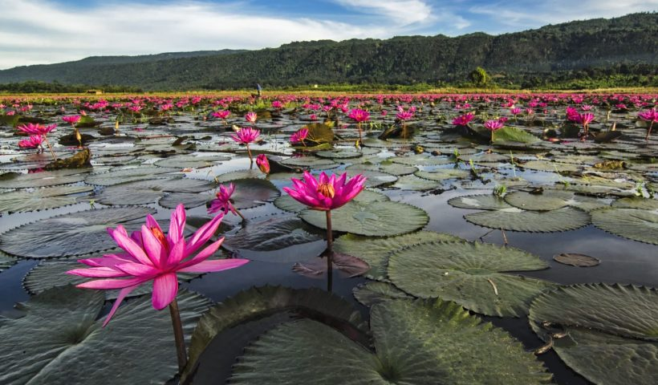
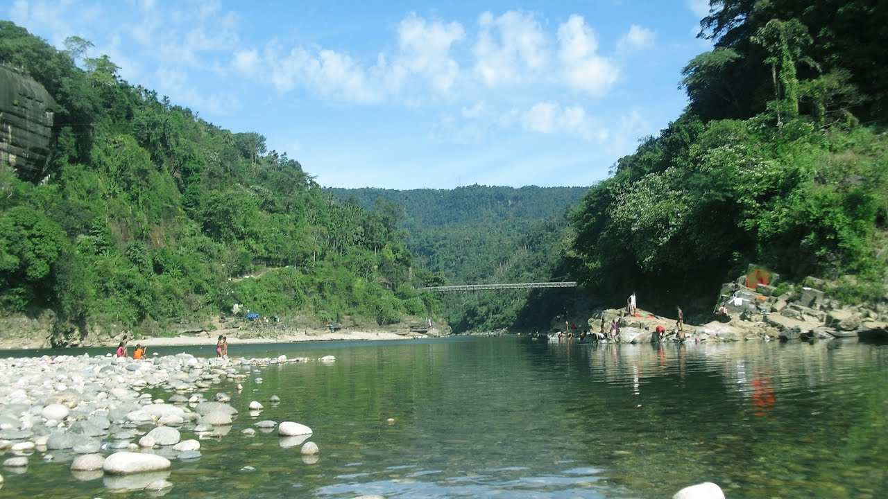
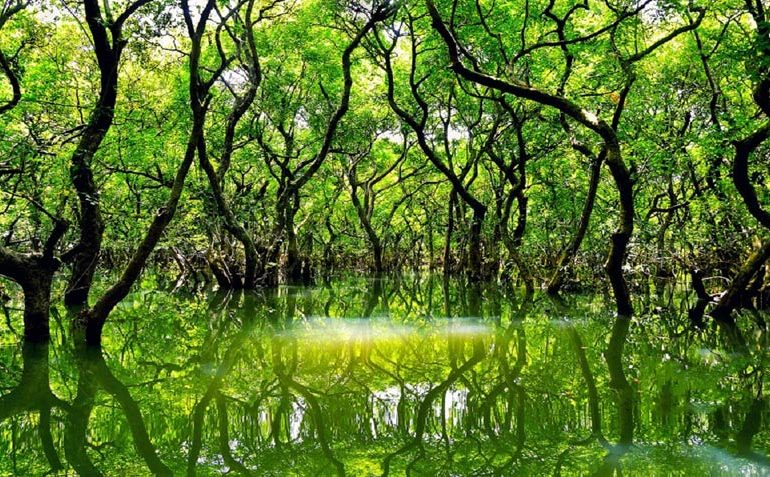
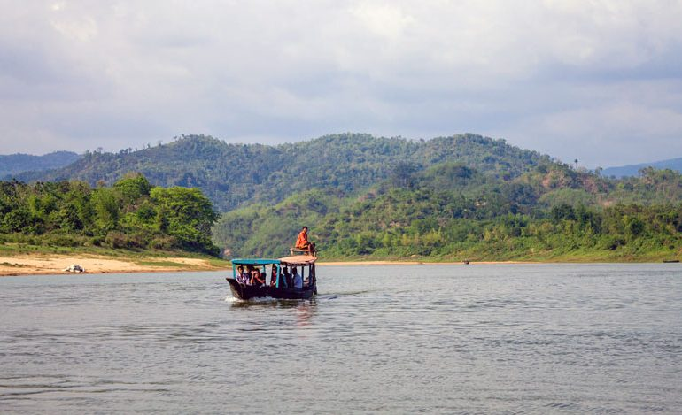

চট্টগ্রাম
 ডিবির হাওর (Dibir Haor) সিলেটের জৈন্তাপুরে বাংলাদেশ ভারত সীমান্ত ঘেঁষা পাহাড়ের পাদদেশে অবস্থিত। সিলেট শহর থেকে ডিবির হাওরের দূরত্ব ৪২ কিলোমিটার। ইয়াম, ডিবি, হরফকাটা, কেন্দ্রী বিল নামে এখানে মোট চারটি বিল রয়েছে। শীতের পর থেকে সম্পূর্ণ বর্ষাকাল জুড়ে (শাপলার সিজনে) বিলগুলো শাপলার রাজ্যে পরিণত হয়। তখন সমস্ত বিল জুড়ে হাজার হাজার লাল শাপলা ছড়িয়ে থাকে। ভোরে হাজারো লাল শাপলা আলোকিত করে রাখে চারপাশ। প্রকৃতি যেন আপন ইচ্ছের মাধুরীতে লাল শাপলার হাসিতে বিলগুলোকে সাজিয়ে দেয় পরম মমতায়। যেকোনো ভ্রমণপিপাসুদের সারাজীবন মনে রাখার জন্য শাপলা বিলে একটি সকালই যথেষ্ট। ডিবির হাওর তাই শাপলা বিল নামেও সবার কাছে পরিচিতি লাভ করেছে। খুব ভোরে হাজার হাজার শাপলা বিলের জলে নিজেদের মেলে ধরে আপন সৌন্দর্য্যের ঝলকানিতে। সেই ঝলক এখানে আসা
সিলেট থেকে বাস, সিএনজি অটোরিকশা কিংবা প্রাইভেট কার ভাড়া নিয়ে জৈন্তাপুরে আসতে হবে। সারা দিনের জন্য সিএনজিচালিত অটোরিকশা রিজার্ভ করতে ১৫০০ থেকে ১৮০০ টাকা পর্যন্ত লাগতে পারে। জৈন্তাপুর বাজার থেকে কিছুটা সামনে এগিয়ে গেলে বর্ডার গার্ড বাংলাদেশের (বিজিবি) ডিবির হাওর ক্যাম্প চোখে পড়বে। এই ক্যাম্পের পাশ দিয়ে ১ কিলোমিটার দূরত্বে শাপলা বিলের অবস্থান। বাসে করে সিলেটের কদমতলী থেকে ডিবির হাওরে আসতে চাইলে জৈন্তাপুর বাজারে বাস থেকে না নেমে ২ কিলোমিটার সামনে ডিবির হাওর ক্যাম্পের সামনে নামলে গ্রামের রাস্তা ধরে মাত্র ১ কিলোমিটার হাটলেই ডিবির বিলে পৌঁছে যাবেন। শাপলা বিলে নৌকায় ঘুরতে চাইলে ৩০০ থেকে ৪০০ টাকা ভাড়া লাগতে পারে।
তামাবিল জৈন্তাপুর রোডে বেশ কিছু রিসোর্ট গড়ে উঠেছে, চাইলে সেইসব রিসোর্টে থাকতে পারবেন অথবা থাকার জন্য সিলেটে ফিরে আসতে পারেন। সিলেট শহরে প্রয়োজন ও সামর্থ অনুযায়ী বিভিন্ন ধরনের হোটেল পাওয়া যায়। সিলেটে উল্লেখযোগ্য আবাসিক হোটেলের মধ্যে রয়েছে হোটেল হিল টাউন, গুলশান, দরগা গেইট, সুরমা,কায়কোবাদ ইত্যাদি। এছাড়া শহরের লালবাজার এলাকায় বেশ কিছু মানসম্মত রেস্ট হাউস আছে৷ এগুলোতে ৪০০ থেকে ৩০০০ টাকায় সহজেই রাত্রি যাপন করতে পারবেন।
 জাফলং (Jaflong) প্রকৃতির কন্যা হিসাবে পরিচিত। সিলেট জেলার দর্শনীয় স্থান গুলোর মধ্যে জাফলং সবার পছন্দ। সিলেট এর গোয়াইনঘাট উপজেলার ভারতের মেঘালয় সীমান্ত ঘেঁষা প্রকৃতির দানে রুপের পসরা সাজিয়ে আছে জাফলং। সিলেট থেকে জাফলং এর দুরত্ব মাত্র ৬২ কিলোমিটার। পিয়াইন নদীর স্বচ্ছ পানির ধারা, ঝুলন্ত ডাউকি ব্রিজ, উঁচু উঁচু পাহাড়ে সাদা মেঘের খেলা জাফলংকে করেছে অনন্য। একেক ঋতুতে জাফলং একেক রকম রুপের প্রকাশ ঘটায় যা পর্যটকদেরকে ভ্রমণের জন্য সারাবছরই আগ্রহী করে রাখে।নদীর পানিতে নারী-পুরুষের এই ‘ডুবোখেলা’ দেখা যায় ভোর থেকে সন্ধ্যা অবধি। সীমান্তের ওপারে ডাউকি নদীর উপরে দুই পাহাড়ের মধ্যখানে ঝুলন্ত সেতু বাড়িয়ে তুলেছে জাফলংয়ের সৌন্দর্য।
সিলেটে থেকে প্রায় সকল প্রকার যানবাহনেই জাফলং যাওয়া যায়। লোকাল বাসে যেতে আপনাকে শহরের শিবগঞ্জে যেতে হবে সেখান থেকে জনপ্রতি ভাড়া লাগে ৮০ টাকা। সিএনজি বা অটোরিকশায় ১২০০ থেকে ২০০০ টাকায় জাফলং যেতে পারবেন। মাইক্রোবাস যাওয়া-আসার জন্য রিজার্ভ নিলে সারাদিনের জন্যে ভাড়া লাগবে ৩০০০ থেকে ৫০০০ টাকা। সিলেট নগরীর যেকোন অটোরিকশা বা সিএনজি স্ট্যান্ড থেকেই জাফলং যাতে পারবেন। দলগত ভাবে গেলে মাইক্রোবাস রিজার্ভ করে গেলেই ভালো, তাহলে আশেপাশের অন্যান্য যায়গা নেমে ঘুরে দেখতে পারবেন। ঠিক করার আগে ভাল মত দরদাম ও কি কি দেখতে চান তা ভালো করে কথা বলে নিবেন।
জাফলং এ জেলা পরিষদের বাংলো ছাড়া থাকার ভালো কোন ব্যবস্থা নেই। বাংলোতে থাকতে হলে আগে থেকেই বুকিং দিয়ে রাখতে হবে। তাই সাধারণত পর্যটকরা সিলেটেই ফিরে আসেন। লালা বাজার এলাকায় ও দরগা রোডে কম ভাড়ায় অনেক মানসম্মত রেস্ট হাউস আছে৷ যেখানে ৪০০ থেকে ২৫০০ টাকায় বিভিন্ন ধরণের রুম পাবেন। এছাড়াও হোটেল হিল টাউন, গুলশান, দরগা গেইট, সুরমা,কায়কোবাদ ইত্যাদি হোটেলে আপনার প্রয়োজন ও সামর্থ অনুযায়ী থাকতে পারবেন।
 রাতারগুল বাংলাদেশের একমাত্র সোয়াম্প ফরেস্ট (Ratargul Swamp Forest)। এটি সিলেট জেলা শহর থেকে প্রায় ২৬ কিলোমিটার দূরে গোয়াইনঘাট উপজেলায় অবস্থিত। রাতারগুল বনটি প্রায় ৩০,৩২৫ একর জায়গা জুড়ে বিস্তৃত। এই বিস্তৃর্ণ এলাকার ৫০৪ একর জায়গায় রয়েছে বন আর বাকি জায়গা ছোট বড় জলাশয়ে পূর্ণ। তবে বর্ষায় পুরো এলাকাটিকেই দেখতে একই রকম মনে হয়। রাতারগুল ‘সিলেটের সুন্দরবন’ নামে খ্যাত। এই রাতারগুল জলাবন বছরে চার থেকে পাঁচ মাস পানির নিচে তলিয়ে থাকা। তখন জলে ডুবে থাকা বনের গাছগুলো দেখতে সমগ্র বাংলাদেশের বিভিন্ন জায়গা থেকে পর্যটকরা এসে ভিড় জমায়। অনেক পর্যটক রাতারগুলকে বাংলাদেশের আমাজন বলেও ডাকেন। বর্ষায় গাছের ডালে দেখা মিলে নানান প্রজাতির পাখি আবার তখন কিছু বন্যপ্রাণীও আশ্রয় নেয় গাছের ডালে। এছাড়াও শীতকালে এখানকার জলাশয়ে বসে হাজারো অতিথি পাখির মেলা। সাধারণত জুলাই থেকে অক্টোবর (বর্ষার শেষের দিকে) পর্যন্ত রাতারগুল ভ্রমণের উপযুক্ত সময়। ১৯৭৩ সালে বাংলাদেশ বন বিভাগ রাতারগুল বনের ৫০৪ একর জায়গাকে বন্যপ্রাণীর অভয়াশ্রম হিসেবে ঘোষণা করে। রাতারগুল একটি প্রাকৃতিক বন, স্থানীয় বন বিভাগ এখানে হিজল, বরুণ, করচ সহ বেশ কিছু গাছ রোপণ করেন। এছাড়াও এখানে চোখে পড়ে কদম, জালিবেত, অর্জুনসহ প্রায় ২৫ প্রজাতির জলসহিষ্ণু গাছপালা।
সিলেট থেকে দুই ভাবে রাতারগুল আসা যায়। সিলেট শহরের পাশের খাদিম চা বাগান ও খাদিমনগর জাতীয় উদ্যানের ভেতরের রাস্তা দিয়ে খুব অল্প সময়ে রাতারগুল পৌঁছানো যায়। এই পথে সিএনজি অটোরিকশা কিংবা জিপ নিয়ে শ্রীঙ্গি ব্রিজ যেতে হয়। সিলেট থেকে সকালে রাতারগুল গিয়ে বিকেলের মধ্যেই ফিরে আসা যায়। তাই সারাদিনের জন্য সিএনজি কিংবা অটোরিকশার ভাড়া ১২০০ থেকে ১৫০০ টাকা লাগবে। আর যদি সিলেটের আম্বরখানা থেকে লোকাল সিএনজি চড়ে যেতে চান তবে শ্রীঙ্গি ব্রিজ পর্যন্ত আসতে জনপ্রতি ১০০ টাকা ভাড়া। শ্রীঙ্গি ব্রিজ থেকে রাতারগুল জঙ্গলে ঢুকার জন্য জেলেদের ছোট ছোট নৌকা পাবেন। একটি ছোট নৌকায় ৪-৬ জন চড়া যায়। এমন একটি নৌকার ভাড়া ৪০০ থেকে ৮০০ টাকা। রাতারগুল যাওয়ার দ্বিতীয় পথটি হচ্ছে সিলেট হতে জাফলং গামী গাড়িতে গিয়ে সারিঘাট নামতে হবে। সিলেট থেকে সারিঘাট আসার ভাড়া নেবে ৪০ থেকে ৫০ টাকা। সারিঘাট হতে বেবিটেক্সিতে করে গোয়াইনঘাট বাজারে এসে নৌকা দিয়ে রাতারগুল যেতে হবে। আর ১০-১২ জনের জন্য একটি নৌকার সারাদিনের ভাড়া লাগবে ৮০০ থেকে ১২০০ টাকা, তবে এপথে খরচ এবং সময় বেশি লাগে। এছাড়া সিলেটের বন্দর বাজার পয়েন্ট থেকে সিএনজি যোগে সাহেব বাজার হয়ে মটরঘাট পৌঁছে ডিঙ্গি নৌকা ভাড়া করে রাতারগুল জলাবনে চলে যেতে পারবেন।
তামাবিল জৈন্তাপুর রোডে বেশ কিছু রিসোর্ট গড়ে উঠেছে, চাইলে সেইসব রিসোর্টে থাকতে পারবেন অথবা থাকার জন্য সিলেটে ফিরে আসতে পারেন। সিলেট শহরে প্রয়োজন ও সামর্থ অনুযায়ী বিভিন্ন ধরনের হোটেল পাওয়া যায়। সিলেটে উল্লেখযোগ্য আবাসিক হোটেলের মধ্যে রয়েছে হোটেল হিল টাউন, গুলশান, দরগা গেইট, সুরমা,কায়কোবাদ ইত্যাদি। এছাড়া শহরের লালবাজার এলাকায় বেশ কিছু মানসম্মত রেস্ট হাউস আছে৷ এগুলোতে ৪০০ থেকে ৩০০০ টাকায় সহজেই রাত্রি যাপন করতে পারবেন।
 লালাখাল (Lalakhal) বিভাগীয় শহর সিলেট জৈন্তাপুর উপজেলায় অবস্থিত। সিলেট থেকে প্রায় ৩৫ কিলোমিটার দূরত্বে অবস্থিত এই লালাখাল নদী ভারতের চেরাপুঞ্জি পাহাড় থেকে উৎপন্ন হয়ে বাংলাদেশে প্রবেশ করেছে। নদী, পাহাড়ি বন, চা-বাগান এবং নানা প্রজাতির বৃক্ষরাজি লালাখালের ভূপ্রকৃতিকে দিয়েছে অনন্য বৈশিষ্ট্য। ভরা পূর্ণিমায় জ্যোৎস্না ধোয়া নদী কিংবা মেঘ পাহাড় আর নদীর মিতালী দেখতে আপনাকে লালাখাল ঘুরে আসতে হবে। বর্ষাকালে লালাখালের পানি খুব ঘোলা থাকে তাই নভেম্বর থেকে মার্চ অর্থাৎ শীতকাল হচ্ছে লালাখাল ভ্রমণের উপযুক্ত সময়। লালাখালের বিভিন্ন অংশে নীল, সবুজ এবং স্বচ্ছ পানির দেখা মিলে। চাইলে তামাবিল অংশের স্বচ্ছ পানির সারি নদীর উপর দিয়ে স্পীডবোট বা নৌকায় লালাখালে যেতে পারেন। ৪৫ মিনিটের এ যাত্রা আপনাকে লালাখালের সৌন্দর্য্যে বাকরুদ্ধ করে রাখবে। সন্ধ্যার পর নদীতে নৌকা থাকে না, তাই সন্ধ্যার মধ্যে ফিরে যাওয়া উত্তম। রাতে লালাখালের রুপে মোহিত হতে পূর্ব প্রস্তুতি নিয়ে আসা বুদ্ধিমানের কাজ হবে।
সিলেট থেকে লালাখালে যেতে হলে নগরীর ধোপাদিধীর ওসমানী শিশু উদ্যানের বা শিশু পার্কের সামনে থেকে লেগুনা, মাইক্রবাস অথবা জাফলংগামী বাসে চড়ে সারিঘাট আসতে পারেন। সারিঘাট সিলেট এবং জাফলং এর মধ্যবর্তী স্থানে অবস্থিত। সারিঘাট থেকে লালাখালে যাওয়ার সিএনজিচালিত অটোরিকশা পাবেন। যদি নদীপথে লালাখালে যেতে চান তবে এখানে ইঞ্জিন চালিত বিভিন্ন ট্রলার ও নৌকা ভাড়ায় পাবেন। লালাখাল থেকে সিলেট ফিরতে রাত ৮ টা পর্যন্ত বাস ও লেগুনা পাবেন। সিলেট থেকে লালাখাল যেতে মাইক্রোবাসে ভাড়া লাগবে ২০০০ থেকে ৩০০০ টাকা। বাস কিংবা লেগুনায় সারিঘাট যেতে ৪০ থেকে ৬০ টাকা খরচ হবে। সারিঘাট থেকে ইঞ্জিনচালিত নৌকায় লালাখালে যেতে ১২০০ থেকে ১৫০০ টাকা এবং স্পিডবোটে যেতে ১৫০০ থেকে ২০০০ টাকা লাগবে। কম খরচে লালাখাল যেতে চাইলে সারিঘাট ব্রিজ পার হয়ে উত্তর দিকে মসজিদ থেকে একটু এগিয়ে ডান দিকে লালাখালের রাস্তায় সারি সারি অটো দাঁড়িয়ে থাকতে দেখবেন। সিরিয়ালের ভিত্তিতে চলা এসব অটোতে জনপ্রতি ভাড়া লাগে ১৫ টাকা। অটো থেকে নেমে লালাখাল ঘাটে গেলেই সবুজ পানির অপার্থিব দৃশ্য দেখতে পারবেন। এখানে ছাউনি দেয়া রঙিন নৌকায় ঘুরতে চাইলে ৫০০ থেকে ৭০০ টাকা লাগবে আর আরো কম টাকায় নৌকা ভাড়া করতে খেয়া পার হয়ে নদীর অপর পাড়ে ছাউনি ছাড়া নৌকা গুলোর কাছে চলে যান। এখানে নৌকাগুলোর সিরিয়াল আছে একটু দরদাম করে ৩০০ থেকে ৪০০ টাকায় ইচ্ছেমত সময়ের জন্য ভাড়া করতে পারবেন।
লালাখালের পাড়ে রাত কাটাতে নর্দার্ন রিসোর্টে বুকিং দিতে পারেন। অতিথিদের সিলেট যাওয়া আসার জন্য এদের নিজেদের পরিবহন ব্যবস্থা রয়েছে। এছাড়া লালাখালের কাছে খাদিমনগরে অবস্থিত নাজিমগড় রিসোর্টে আগেই যোগাযোগ করে নিতে পারেন। কারণ সিজনে রিসোর্টের সব রুম বুক থাকতে পারে। নাজিমগড় রিসোর্টে টেরেস, ছোট বাংলো এবং বড় ভিলায় রাত্রি যাপনের সুযোগ রয়েছে। এই রিসোর্টটি আধুনিক সুযোগ-সুবিধায় ভরপুর। প্রতি রাতের জন্য নাজিমগড় রিসোর্টের প্রিমিয়ার কক্ষের ভাড়া ৭০০০ টাকা এবং প্রেসিডেন্সিয়াল স্যুইটের ভাড়া ১৫,০০০ টাকা। তবে থাকার জন্য সিলেট ফিরে আসাই সুবিধাজনক। সিলেটের লালা বাজার ও দরগা রোডে কম ভাড়ায় অনেক মানসম্মত রেস্ট হাউস আছে৷ যেখানে ৪০০ থেকে ১০০০ টাকায় বিভিন্ন ধরণের রুম পাবেন। এছাড়াও হোটেল হিল টাউন, গুলশান, দরগা গেইট, সুরমা, কায়কোবাদ ইত্যাদি হোটেলে আপনার প্রয়োজন ও সামর্থ অনুযায়ী থাকতে পারবেন।